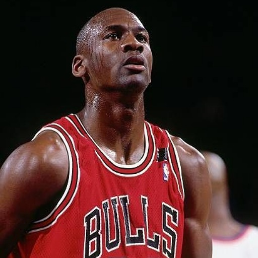
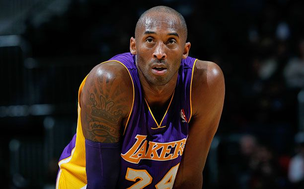

You already knew it was coming. He needs no introduction. 4x champion, 4x MVP, 4x Finals MVP, All-time NBA Scoring Record.
21x All-star. 6x All-Defense.
3x Olympic Gold Medalist. He’s quite literally done it all. Unlike his Airness, Michael Jordan, LeBron could REALLY do it all. He has the most points. EVER. Not only that, he is top 5 in assists all-time, as well as triple-doubles. In the playoffs, he’s 1st in points AND steals, 2nd in assists, and 4th in rebounding. Most players dream of breaking the top 10 for a single all-time stat. LeBron is top 5 in everything, with the only exception being rebounds which he is top-25 all time in as a small forward, while everyone above him is either a power forward or center. If you really know ball, you can’t deny how extraordinary of a player LeBron really is.
#2: Micheal Jordan

6 Finals. 6 Rings. Undeniable. Michael Jordan was (and arguably still is) the greatest human to ever play the game of basketball. He dominated everywhere on the court, both offensively and defensively. He could snatch-block your shot, run to the other side, slam dunk it while jumping higher than you though humanly possible, taunt you, and immediately get right back on defense, all in front of 20,000 fans every night. Now, one might say “He only scored so much because he was taking 40 shots a night!”, and that’s not a bad argument to make. However, you still have to make the shot to score, and there’s a reason they let Mike take it every time.
#3: Tim Duncan
Oftentimes, “The Big Fundamental” is left out of the casual lunch-table G.O.A.T. debates, and is even underappreciated at times by more serious fans as well. If you really know ball though, you know Tim Duncan belongs right here, just below the feud for the title of “goat”. That’s because Tim was never trying to be the “greatest”, he just wanted to win. So he did. A lot. In fact he never had a season with less than 50 wins, never missed the playoffs, and has a total win percentage of 71.9%. He was a generational player that knew his role on the most regimented team in basketball, and did whatever he needed to do for the team’s success. He wasn’t doing flashy moves trying to snatch ankles, he just got to the right spot and put the ball in the hoop. If it ain’t broke, don’t fix it. That’s what got Timmy 5 rings (3 of them in 5 years), 2 MVPs, and 2 Finals MVPs. Tim runnin’, Tim jumpin’, and if Tim got the ball, Tim Duncan.
#4: Kobe Bryant

Kobe Bryant is the greatest player of all time because he combined unmatched skill, competitive fire, and a relentless work ethic that set a standard no one else has reached. His “Mamba Mentality” wasn’t just a slogan — it was a lifestyle that pushed him to outwork everyone, obsess over the smallest details, and continuously evolve his game for 20 seasons. He dominated offensively with one of the most complete scoring arsenals ever — footwork, mid-range, post-moves, three-level scoring, fadeaways, clutch heroics — all while locking down opponents as an elite defender. He won 5 championships, played through injuries most players would sit out, and delivered iconic performances that shaped a generation. More than his stats, Kobe’s legacy is his mentality: he inspired millions of athletes worldwide to push past limits, sacrifice for greatness, and compete with fearless intensity. No player has influenced the culture of basketball — on the court and in everyday life — the way Kobe Bryant has.